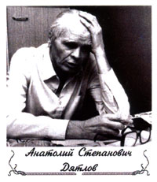

Анатолий Степанович Дятлов родился 3
марта 1931 г. в селе Атаманово Красноярского края. Отец -инвалид первой мировой
войны работал бакенщиком на р. Енисее, мать домохозяйка.
После окончания 7-ми классов в 1945 г. поступил в Норильский
горнометаллургический техникум, электротехническое отделение которого закончил
с отличием в 1950 г. Три года работал в г. Норильске на одном из предприятий
Минсредмаша. В 1953-1959 гг. учился в Московском инженерно-физическом институте,
который окончил также с отличием, получив квалификацию инженера-физика по специальности
автоматика и электроника.
По распределению был направлен на судостроительный завод
им. Ленинского комсомола в г. Комсомольск-на-Амуре, где трудился в должностях
старшего инженера, начальника физической лаборатории, сдаточного механика главной
энергетической установки атомных подводных лодок. В 1973 г. по семейным обстоятельствам
перевелся на строившуюся Чернобыльскую АЭС, где прошел путь от заместителя начальника
реакторного цеха до заместителя главного инженера станции по эксплуатации. Награжден
орденами Знак Почета и Трудового Красного Знамени.
Во время аварии 26 апреля 1986 г. получил дозу облучения
как минимум 550 бэр. По приговору Верховного Суда СССР признан одним из виновников
аварии и осужден на 10 лет лишения свободы в колонии общего режима. Отбывал
срок в поселке Крюково Полтавской области.
После многочисленных обращений различных организаций,
друзей, лично А.Д. Сахарова, а после его смерти - Е.Г. Боннер, 1 октября 1990
г. А.С. Дятлов был досрочно освобожден по ст. 220 (по болезни). Лучевая болезнь
быстро прогрессировала и несмотря на помощь немецких врачей (с 1991 г. по два
раза в год Дятлов лечился в ожоговом отделении университетской клиники Мюнхена).
13 декабря 1995 г. А. С. Дятлова не стало.